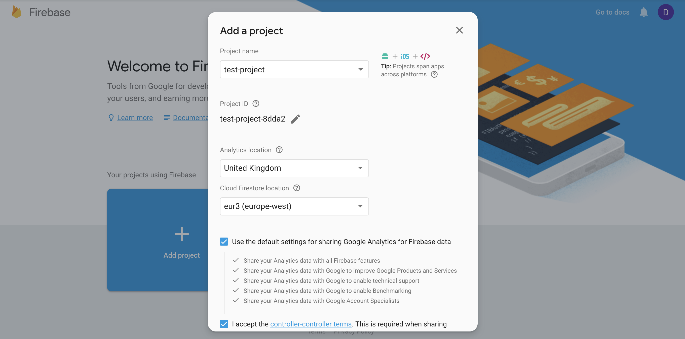
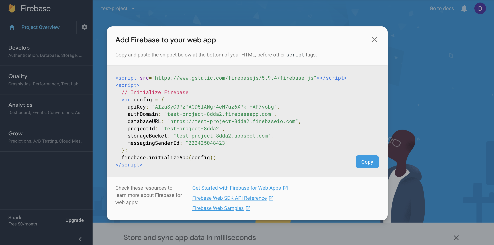
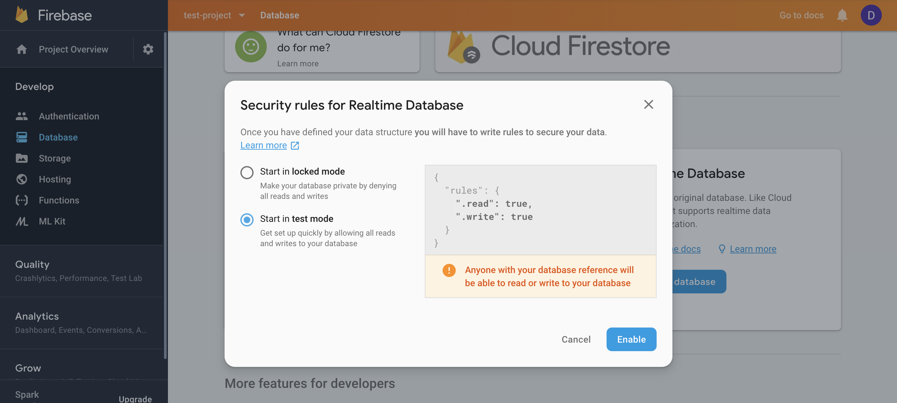

Firebase
Firebase is a mobile and web application development platform developed by Firebase, Inc. in 2011 and acquired by Google in 2014. As of October 2018, the Firebase platform has 18 products.
Firebase can provide us with many different features and services such as Authentication, Storage, Testing and Database. You may, for example, use Firebase to store your application's data inside the Firebase Real-time database.
You may want to reference other pages within the notes:
To start, go to the Firebase homepage and click on the Create New Project or the App Project button. You will need to be logged into a Google account or Gmail. Once logged into the Firebase console, you will need to create a new project.
To create a Database, click on the Database tab within the Firebase console. Select 'Realtime Database' and not 'Cloud Firestore Database' and then click on the 'Create database' button.
Select the "Start in test mode" option and click on the 'Enable' button. We have now setup a Firebase project and created a Realtime database for our app. We now need to connect the Firebase project to our application.
Firebase & React
To connect Firebase and React, we need to install the Firebase libray inside our React app using NPM (Node Package Manager) or Yarn. This will need to be saved as a dependency.
$ npm install firebase --save
# Yarn
$ yarn add firebase
Once you've installed Firebase, we will create a new file for the Firebase setup. We can use a JavaScript class to encapsulate all Firebase functionalities, realtime database, and authentication as a well-defined API for the rest of the application. You need only instantiate the class once after which it can be used to interact with the Firebase API.
In the home of the Firebase project, you will notice three circular icons. The first two contain code that helps you connect the firebase project to an iOS or Android app. The third one will have code that will help you to connect the Firebase project to a web app (which is what we want). Click on it and copy the: apiKey, authDomain, databaseURL, projectId, storageBucket, and messagingSenderId values. These values are unique for each project.
Inside your React project directory, go to the src folder and create a new file named firebase.js. We will use this file to add our Firebase credentials.
// src/components/Firebase/firebase.js
const config = {
apiKey: "ENTER YOURS HERE",
authDomain: "ENTER YOURS HERE",
databaseURL: "ENTER YOURS HERE",
projectId: "ENTER YOURS HERE",
storageBucket: "ENTER YOURS HERE",
messagingSenderId: "ENTER YOURS HERE"
};
You may want to consider having two projects in Firebase, one for development and test data, the other for production and live data.
Setting up Firebase for the Web
Once you've logged into Firebase, select the 'Add project' button and create a new project.
Within the modal, click the 'Create project' button. This will open the main dashboard for the project we've just created. Click on the </> icon on the dashboard and this will open the code snippet we need to add to our HTML page.
This script should be added at the bottom of your HTML page before other <script> tags.
<script src="https://www.gstatic.com/firebasejs/5.9.4/firebase.js"></script>
<script>
// Initialize Firebase
var config = {
apiKey: "AIzaSyC0PzPACDXXXXXXXXXXXX",
authDomain: "test-project-8dda2.firebaseapp.com",
databaseURL: "https://test-project-8dda2.firebaseio.com",
projectId: "test-project-8dda2",
storageBucket: "test-project-8dda2.appspot.com",
messagingSenderId: "222425048423"
};
firebase.initializeApp(config);
</script>
At this stage we are only using the development version of Firebase.
Creating a database
Within the Firebase dashboard, you can create a database by clicking the Database option within the sidebar menu. We may want to look to create a Realtime Database. We want to create the database to be in 'Test mode' initially.
Click the 'Enable' button on the modal.
We can get a reference to the database service:
// Get a reference to the database service
var database = firebase.database();
console.log(database);
We can create a <div> element on the HTML page like so:
<div id="output"></div>
A small piece of JavaScript code can be used to get the Firebase database and output the full database as an object onto the page:
var ref = firebase.database().ref();
ref.on("value", function(snapshot) {
var output = document.getElementById('output');
output.innerHTML = JSON.stringify(snapshot.val(), null, 2);
});
If we change the database in Firebase, the HTML page will automatically be refreshed with the new content as its a real time database.